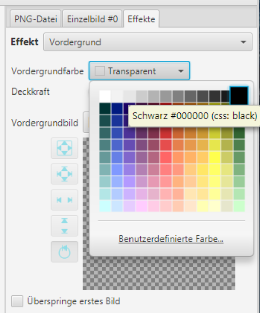
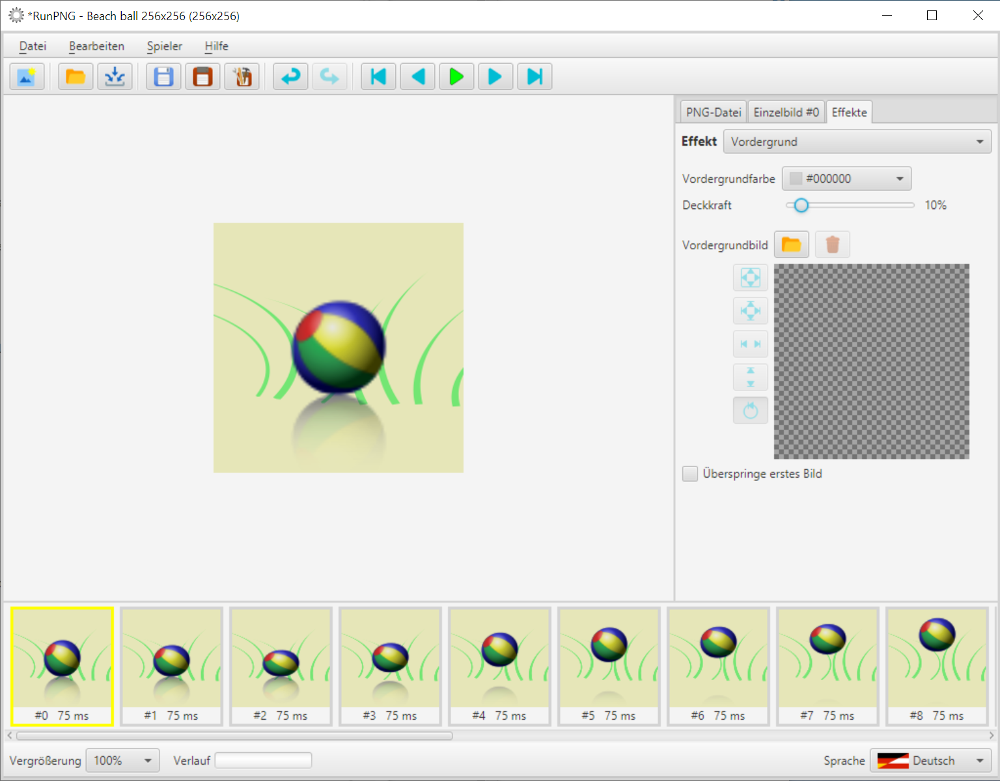
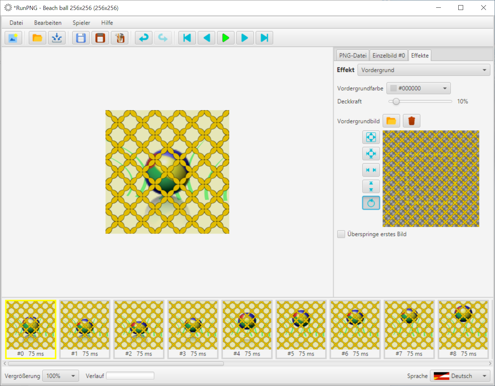

Vordergrund
Eine Vordergrundfarbe sollte durchscheinend bis transparent sein, damit man etwas von der eigentlichen Grafik sieht. Gleiches gilt für das Vordergrundbild. Zum Ausprobieren dieses Effektes laden wir uns zuerst einen animierten Strandball in den Arbeitsspeicher. Das Bild befindet sich unter RunPNG/doc/samples/various/Beach ball 256x256.png. Es ist eine APNG-Datei und besteht aus 20 Einzelbildern. Wir brauchen nichts weiter daran machen. Oder wir verwenden so wie hier das Bild aus dem Abschnitt Hintergrund weiter.
Unter dem Tabulator Effekte findet sich der Effekt Vordergrund. Fangen wir mit der Vordergrundfarbe an. Dazu den Farbwähler anklicken und eine beliebige Farbe aussuchen. Z. B. Schwarz. Und wir sehen, dass wir erstmal nichts mehr sehen. Der Grund ist bereits oben erklärt. Mit dem Deckkraft-Schieberegler muss die Vordergrundfarbe durchscheinend gemacht werden. 100% entspricht voll deckend, 0% ist völlig transparent.
Mit nur 10% Deckkraft liegt nun ein leichter Schleier über dem Bild. Der ausgewählte Farbvordergrund wirkt sich sofort auf alle Einzelbilder aus und wird über die dahinter liegenden Farben geblendet.
Nun kommt noch ein Vordergrundbild hinzu. Es befindet sich unter RunPNG/doc/samples/various/net orange.png. Strand, Strandball, Netz scheint eine passende Kombination. Doch man sieht, dass das Vordergrundbild zu groß ist. Es hat nämlich 512 x 512 Pixel. Wer es so mag kann es so lassen. Die überstehenden Teile werden von der Applikation beim Zusammenfügen der Bilder entfernt.
Oder man skaliert das Vordergrundbild symmetrisch mit der Schaltfläche . Das Netz würde damit feinmaschiger.